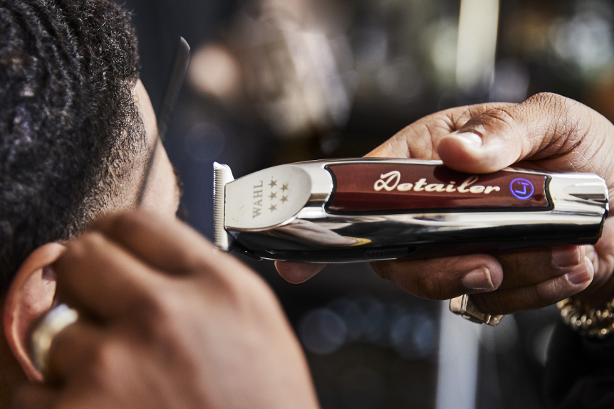

Simple Guidance for you and clippers
Intro
Being a barber for 5 years has really allowed me to explore and test out new clippers and trimmers. There are plenty of options out there to choose from and can become quite nerve wrecking for beginner with a small budget. Today we will talk about the different kinds of clippers as well as some recommendations from me.
The Types of Clippers and Trimmers
When it comes to clippers, there is a plentiful to choose from. Basically, they can all be broken down into two categories: Clippers and Trimmers. Looking into each catergorie with a bit a depth youll see that both are used to achieve different things. Clippers are you traditional machine everyone is fimiliar with. These are your main tool used to cut down bulk in the hair and fade the hair as well. They also have an adjustment lever to get very detailed fades. Trimmers are the smaller clipper usually used to outline the neckline and front hairline as well. These trimmer have a set blade which can make them very sharp and not useful for fading.

Deciding Which One is Right for You
The biggest thing when choosing a new clipper, wether you're a beginner or have experience is comfortability. You goal is to find a good trimmer and clipper that fits your needs and is comfortable to use. Watching reviews on different clippers is really helpful and can give you more in depth details about those clippers or trimmers. Also remember not to spend all your money on one set especially if you're a beginner. Althought there is tons of brands that offer various models, stick to what works for you.
Recommendations
- A good list of recommendations :
- 1 . Wahl Magic Clips (corded and cordless versions)
- 2. Wahl Legends
- 3. Andis Envy
- 4. Oster FastFeeds
- Trimmers:
- 1. Wahl Hero
- 2. Wahl Detailer
- 3. Andis Outliner
- _